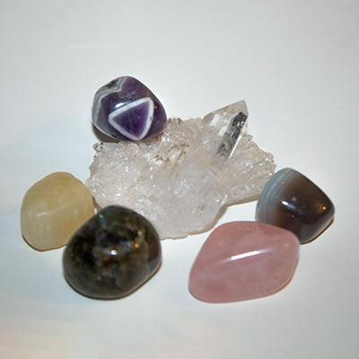
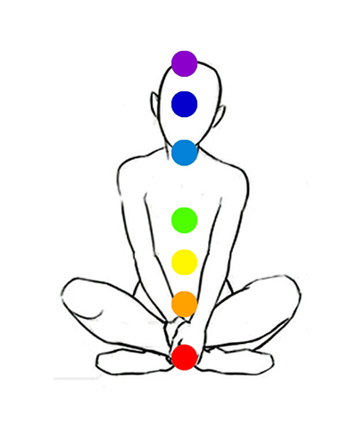

What is Crystal Healing?
Crystal Healing is a pseudoscientific alternative-medicine that uses stones and crystals to heal. It is a vibrational energy based way of healing. The main influence is the chakra philosophy of disease created by energy imbalances. Crystal Healing is based off the traditional concepts of Asian cultures. It also takes some ideas from the Hindu and Buddhist concepts. Each Crystal and stone carries energy and several other properties to help protect and heal ones mind, body, and aura.
How Crystals Work
Science behind Crystals
Science proves that 99.9999% of matter is empty space consisting of energy. This means that everything is energy or vibrational frequencies. Crystals carry a vibrational energy that does not change due to their perfect geometric pattern of molecules. The fixed pattern helps to keep a stable energy in the crystals. The more stable the energy, the more powerful it is. The more powerful it is, the more influence it has on the other energies around it. As humans we also carry these frequencies, but ours change constantly because of many factors in the news, media, environment and so on. People can be high vibrational or low vibrational. Low vibrational people carry many "bad" traits such as jealousy, fear, anxiety, etc. These things are caused by blockages in the Chakras.
What are the Chakras?
The human body carries many points of energy commonly known as Chakras. The word itself means "wheel," in crystal healing this means a energy circulation point. The chakras can be connected to things like colors, astrology, pleants and crystals.
The 7 main chakras are:
- Crown Chakra - Purple
- regulates spirituality
- Third-Eye Chakra - Indigo
- regulates intuition
- Throat Chakra - Blue
- regulates expression
- Heart Chakra - Green
- regulates emotion
- Solar-Plexus Chakra - Yellow
- regulates sense of self
- Sacral Chakra - Orange
- regulates creativity
- Root Chakra - Red
- regulates survival/security

Crystals + Your Chakras
The powerful energy that the crystal holds can circulate with your Chakra to help balance it out. As seen each chakra is tied to a color and crystals are different colors as well. This is helpful because if you notice a specific chakra doesnt feel right and are looking for a crystal you can choose a crystal matching the color of that chakra. Crystals also carry different properties of energy so if you do research, you can find the right crystal for you through those traits.